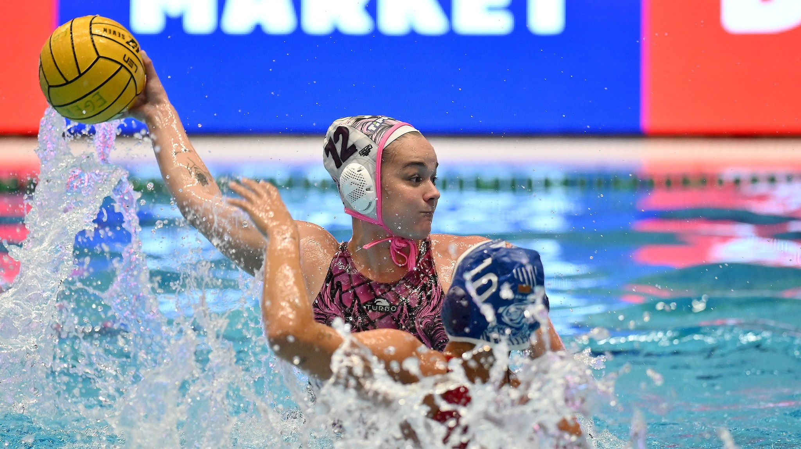

Másodszor nyert a BVSC, ismét kikapott az Eger a női vízilabda BL selejtezőjében
A holland Edében a zuglóiak remek támadójátékkal verték a francia Lille-t, míg a Dunaújváros a házigazda holland Polar Bears alakulatát verték simán, Garda Krisztina hétszer volt eredményes.
Az egri csoportban a DIGI Eger hazai környezetben a második mérkőzését is elveszítette, nagy csatában maradtak alul az olasz SIS Romával szemben. A III. kerületi TVE az olasz Trieste ellen az első negyedben már 7–2-es hátrányban volt, innen tudott egyenlíteni 10–10-re, majd vezetett 13–12-re. A hajrát azonban jobban bírta az olasz csapat és nyert 14–13-ra.
Korábban, az athéni csoportban az FTC-Telekom Waterpolo 17–8-ra nyert a holland ZV De Zaan ellen.
A selejtezőben öt csoportban zajlanak a küzdelmek, mindegyikből az első kettő lép tovább, illetve a legjobb harmadik csatlakozik még a főtábla mezőnyéhez, amelynek az UVSE, a spanyol Mataro, a Sabadell, a görög Olimpiakosz és az olasz Orizzonte Catania kiemeltként automatikusan tagja.